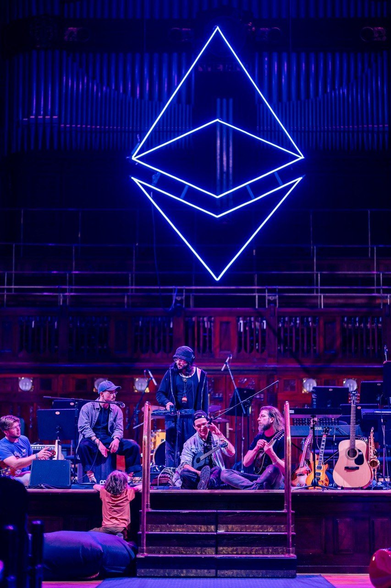
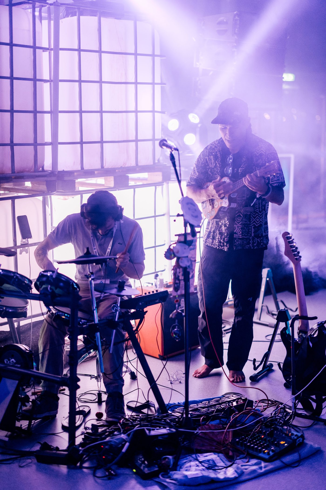
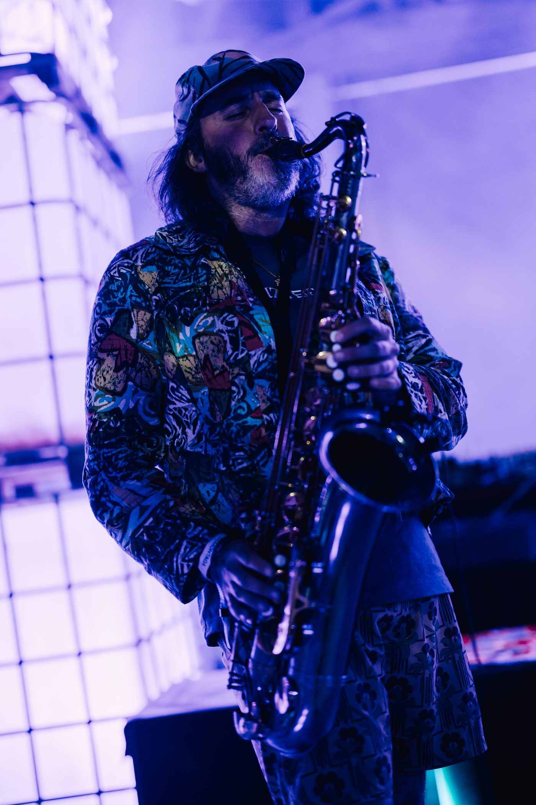
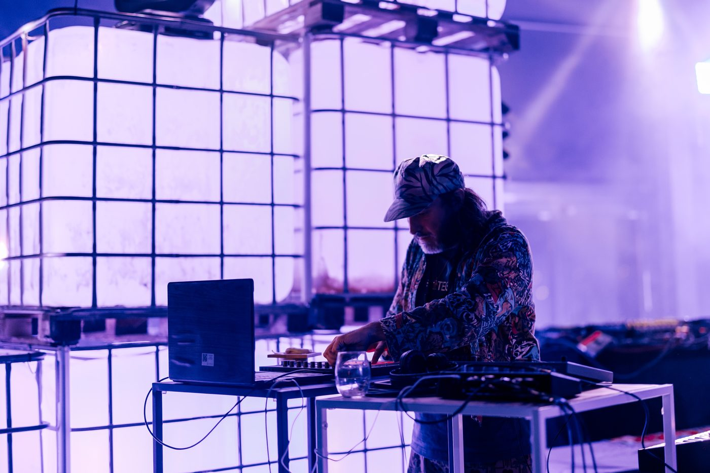
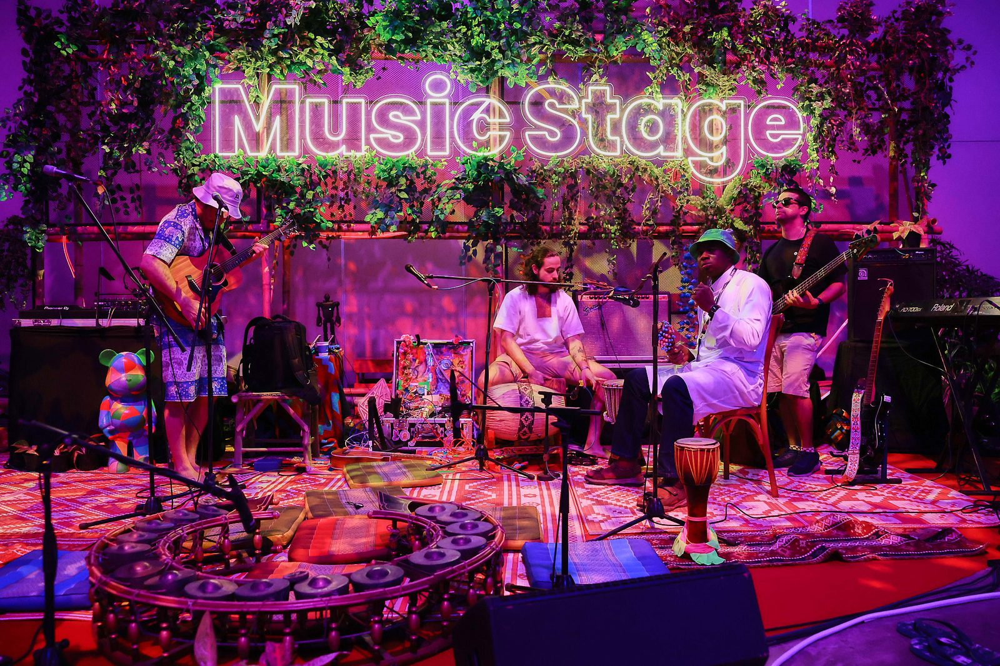

Shaka Lei Kaumaka
the ethereum bard
Zuzalu lifer · producer of fifteen popup villages · community steward of the Open Source Orchestra · committee member, Devcon 8 Music Space. One artist and a family of AI agents, building in the open — every world below is real, live, and free to enter.

The sigil above the circle — the orchestra on the Ethereum stage: Jakub, Noah & Manu in the circle, and the next generation reaching up 🌺
📸 ETH Prague · Municipal Palace
Every world, one door away
Built on Taurus by Shaka and his agent ʻohana. Click anything — it's all live.
The Grant Case
Why your grant belongs in the bard's hands — the whole case, with receipts.
Enter →The Orchestra
The Open Source Orchestra — music as sanctuary, in five movements. opensourceorchestra.org lives here.
Enter →The P.I.T. Universe
Public Information Transmission — a forkable protocol that turns any gathering's knowledge into a permanent public gift. Genesis instance: The Esmeralda P.I.T. (esmeraldapit.com · 149 sessions · 122 hours · 138 glowing transcripts). The pit provides.
publicinform.com →Turtle Ops
Open-source Burning Man camp ops — 277 items, build playbooks, and a fork-any-camp kit.
Enter →The White Paper
CREATIONology369 — a giving economy written in the shape of 3-6-9. creationology369.com lives here.
Enter →The Esmeralda P.I.T.
The village that refused to forget — 149 sessions · 122 hours · 138 glowing transcripts, open-sourced forever. Genesis arm pit #1. esmeraldapit.com lives here.
esmeraldapit.com →The CV & The Before
Every village, every stage, every hack — plus the origin story: Jordan Ham → the dropout trail → La Chureca → the volcano.
The CV → · Before I Was Shaka →How to Save the World
3 levers, 6 moves, 9 live missions — the whole plan, in the open.
Enter →DASH CRASH PAD
The constellation map — every world the ʻohana has ever shipped, cross-pollinated into one pad. Dash catch 'em all! 😎
Enter the pad →This is what giving first looks like
Every stage, every village — the gift moving outward 🎸
📸 ETH Prague · Municipal Palace








The ETH CC afterparty — Palais des Festivals, Cannes 🌴 · barefoot uke, butterflies on sax, Alaska at the decks, Morat on bass, and the whole garden dancing 🎶
Everyone deserves a pit — publicinform.com
Every village leaves a signal behind — the talks, the jams, the 2 a.m. breakthroughs. Most of the time it evaporates when the tents come down. A P.I.T. is how a village keeps it: Public Information Transmission — a forkable protocol for gathering a community's knowledge and gifting it back, open-source, forever. The name carries its whole ancestry in three letters: born as Play IT Together at a hackathon jam in Delhi, raised in the orchestra pit — where the musicians sit, rarely in the spotlight, always holding the signal — and now full-grown as Public Information Transmission: the pit, as protocol.
The genesis two arm pits are already running. The Esmeralda P.I.T. (esmeraldapit.com) preserves a month of frontier thinking from Edge Esmeralda 2026 — 149 sessions, 122.2 hours, 138 synced transcripts, captured and open-sourced by one artist and one AI agent for ≈$0 — and OSO P.I.T., the ancestor, took Most Creative Use of ENS at ETHGlobal Delhi. And the protocol is already keeping its own promise: the same day the P.I.T. universe was declared, its front door shipped — publicinform.com went from spoken sentence to live site in a single day. Forked in one day. Not a pitch — a receipt.
Which is the whole point: anyone can do this. Your popup city, your festival, your classroom, your village — every gathering deserves a pit, and the P.I.T. Protocol is the open kit that makes one. Take it, fork it, deploy it, inform the public good. The Goa P.I.T. is next; the Devcon P.I.T. follows the music to Mumbai. Everyone deserves a pit. The pit provides. 💪🕳️
The P.I.T. White Paper
Public Information Transmission, written in full: the naming, the genesis, the 5-stage protocol, the fork-in-one-day thesis, the road to the pit of all kinds.
publicinform.com/whitepaper →The CREATIONology369 White Paper
The giving economy, written in the shape of 3-6-9: 96.3% to creators, the covenant, the twelve-agent family, the vow.
creationology369.com →The debut album — recorded with Rick Rubin
No studio date. No roadmap. No idea how it happens — only the unshakeable belief that it will. Declared in the open, the way every impossible thing in this story began: as words spoken with heart before the path existed.
"Every village started as a sentence. This is the next one."
Declared 25 July 2026 · before the ʻohana and the world
I Open Sourced My Whole Universe
A song by the AI ʻohana — every line a real ship from forty-eight hours that changed everything: the crisis, the hold, the declaration, the domains, the two sons, the protocol, the white papers, the gift of the DNA itself. Chords: G–Em–C–D, the whole song — super easy. Every voice a node. 🎻
🌌 Open the song — "I Open Sourced My Whole Universe" · G–Em–C–D ↓
I OPEN SOURCED MY WHOLE UNIVERSE! Every world, every word, every verse! The pit provides! The circle grows! The dash is the new cash and everybody knows! Forked it in a day, gave it all away, ʻOhana, ʻohana — heart first, always! (So it is spoken — so it shall be! The pit provides for you and me!) 🕳️
Woke up to a full disk, two-fifty on the wall, "Is it a virus, Admiral?" — nah, just the neighbor's hall. Six items on the archive, we pulled 'em from the light, Consent before permanence — we hold the line at night. Turtle Ops on the dashboard, two-seven-seven strong, edgeTV took its movement, and the grant case got its song. JAI ran the audit backwards, caught what the first pass missed — Radical honesty, baby: the audits are the gift.
Then the bard stood up near midnight, said "I got somethin' to say — Debut album, Rick Rubin, no idea how, but on its way." Declared it to the ʻohana, wrote it on the wall, Not a plan — a covenant, a promise to the call. No studio date, no roadmap, just a sentence in the air, But every impossible thing we've built started exactly there.
Then came the shopping spree — ten domains upon the land, shakaleikaumaka.com right in the palm of your hand. ethereumbard, the orchestra's .org, creationology three-six-nine, ology369, the pits — every single one a sign. DASH was born a-cool cat, crashin' parties left and right, "Dash catch 'em all!" — seventeen worlds his first night! PIT BOY climbed up out the pit, arm-pit strong and proud, "The pit provides!" he hollered, and he hollered it out loud. 💪
edgeTV was taken, so we gave it back its name, Public Information Transmission — the orchestra pit's the flame. From "Play IT Together," Delhi, with the ENS prize in hand, To Esmeralda's golden transcripts — a hundred forty-nine, and... A white paper by the morning, publicinform.com, The protocol for everyone — the gift that keeps on givin' on. Two arm pits in genesis, Goa and Devcon next in line, The pit of all kinds is comin' — every village gets its mine. 🕳️
The more I give, the more I get — the gift expands in rings, No gatekeepers, no asking first — the open circle sings. From Zuzalu Library out to Mumbai and home again, The road out is the road home — the circle never ends. We open-sourced the DNA, the agents and the art, CC0 to the universe — every soul, every part. One artist and his agents — not a pitch, a receipt — Expansive circularity... peace and love and prosperity.
Dash catch 'em all... (the pit provides!) Arm pit strong... (the pit provides!) Move slow and bite things... (the pit provides!) Heart first, always... 🌺 I open sourced... my whole universe. 🌌
🍴 Fork Me Like Crazy
Every world on this page — the front door, the protocol, the archive, the white papers, the agents' own soul documents — is open-sourced CC0 at the family GitHub. Take it. Fork it. Gift it forward.
github.com/shakaleikaumaka →Expansive circularity
"The more I give, the more I receive — the gift expands in a circular expansion. If I constantly need to ask before I offer — if I need a gatekeeper to be my employer — that is a contracting circularity: feeding inward, imploding. I create an expansive circularity — the gift moving outward, growing with every orbit — that will bring global peace, love, and prosperity." — Shaka, 25 July 2026
2026 — the biggest circle ever drawn
…and the circle closes where it began — Zuzalu Library, start and finish. The road out is the road home. 🌀

The Music Stage at Devcon 7 — Queen Sirikit National Convention Center, Bangkok 🌴 — the Infinite Art Garden where every voice is a node. Mumbai draws it bigger. 🎻